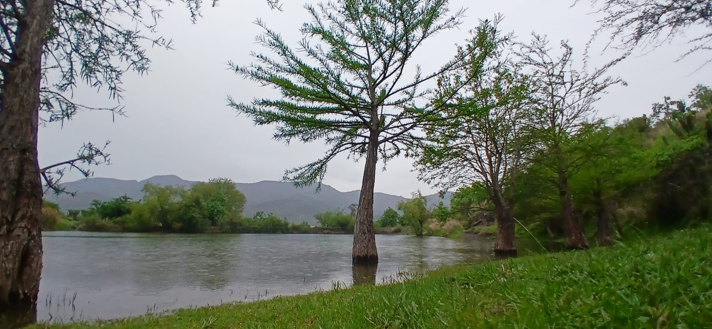
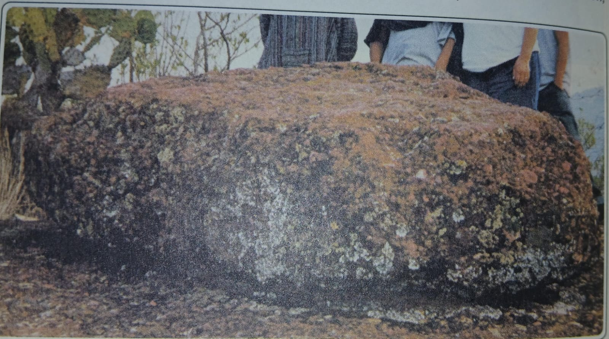
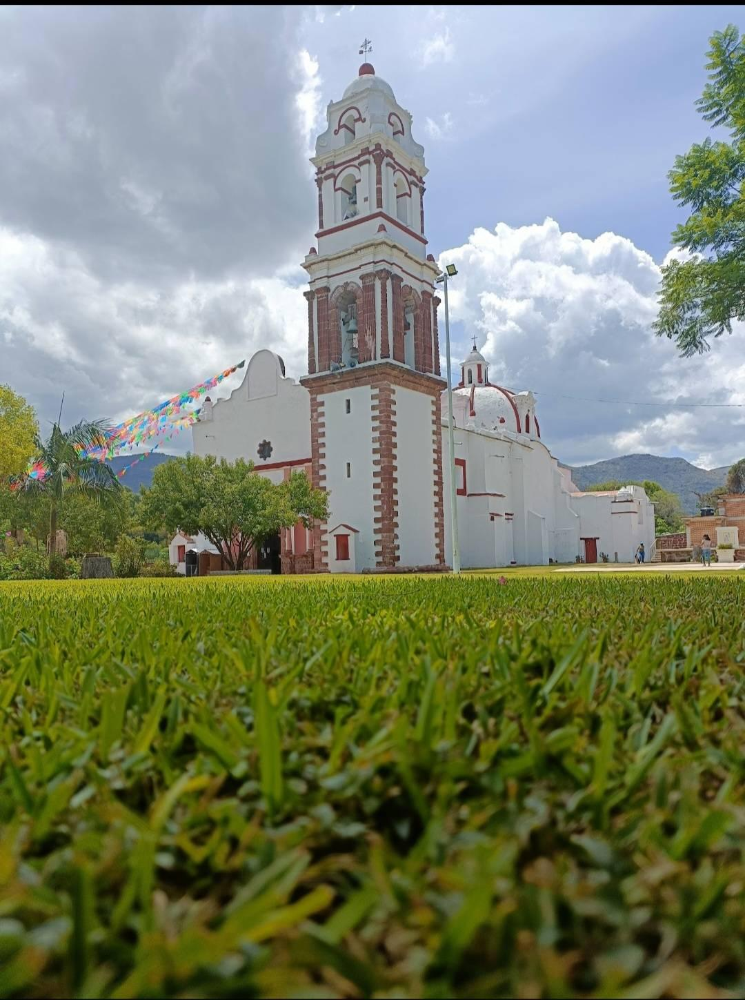

Guaxolotitlán de ayer, Huajolotitlán de hoy
"Huajolotitlán no se lleva en los pies que lo recorren, sino en el corazón de quienes lo aman."
Santiago Huajolotitlán cuenta con diversos lugares que destacan por su belleza natural y por ser parte importante de la comunidad. Estos sitios son visitados por habitantes y personas de lugares cercanos.
Se encuentra en una zona cercana a la comunidad, rumbo a los cerros. Es un lugar muy conocido por su paisaje natural y por la tranquilidad que ofrece a quienes lo visitan.
Está ubicada a las afueras del pueblo y es uno de los lugares más visitados por familias y jóvenes. Muchas personas acuden para convivir, descansar y disfrutar del paisaje natural.
Se localizan en áreas cercanas a los campos de la comunidad y durante el mes de junio florecen, creando un paisaje muy bonito que llama la atención de visitantes y habitantes.
Se encuentra en el centro de la comunidad y representa uno de los lugares más importantes por su valor histórico, cultural y religioso.
Alrededor del pueblo existen caminos, cerros y áreas naturales que permiten apreciar la belleza de la región Mixteca y disfrutar del ambiente tranquilo de la comunidad.
Estos lugares hacen de Santiago Huajolotitlán un sitio especial donde la naturaleza, la historia y las tradiciones forman parte de su atractivo turístico.


